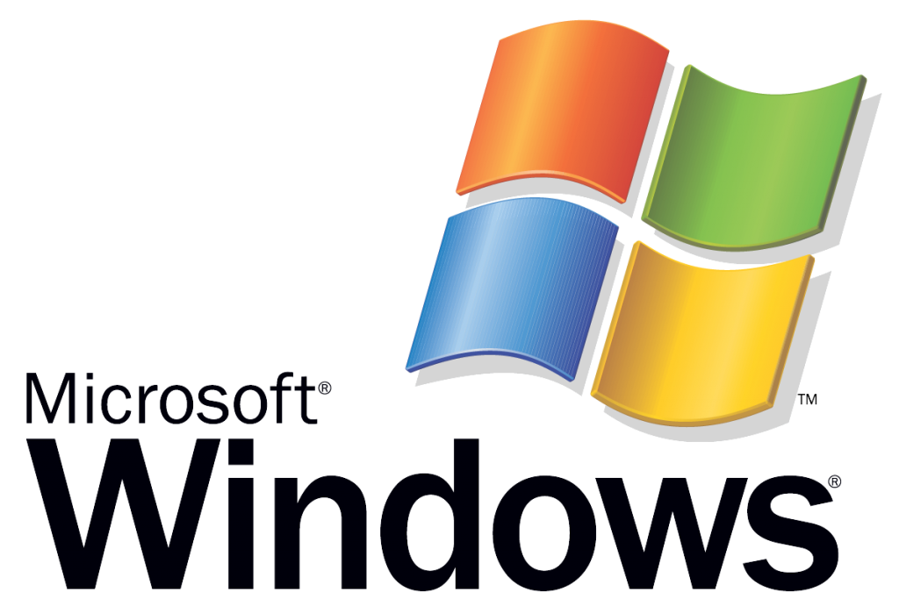

Windows
Microsoft Windows (abbreviazioni comunemente utilizzate: "Windows" o "Win")
è una famiglia di ambienti operativi e sistemi operativi dedicati ai personal computer, alle workstation, ai server e agli smartphone.
Il sistema operativo si chiama così per via della sua interfaccia di programmazione a finestre (dette windows in lingua inglese).
In particolare Microsoft Windows nasce come ambiente operativo per i sistemi operativi MS-DOS e PC DOS (dedicati ai personal computer),
e diventa sistema operativo con Windows NT (dedicato alle workstation e ai server) e Windows 95 (dedicato ai personal computer).
E' software proprietario della Microsoft Corporation che lo rende disponibile esclusivamente a pagamento.
In particolare attualmente Microsoft Corporation commercializza solo sistemi operativi appartenenti alla famiglia Microsoft Windows: Windows 8.1
per i personal computer e le workstation, Windows Server 2012 per i server, Windows Phone per gli smartphone, e Windows CE per i Pocket PC e i Portable Media Center.